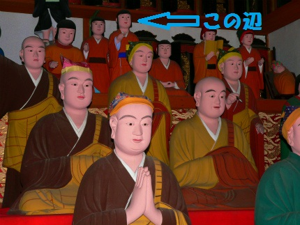
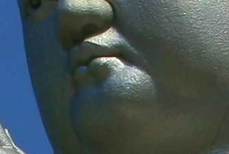

子安観音寺/香川県
小豆島にある子安観音寺は慶長年間に建立された400年以上の歴史を有する寺だ。
小豆島には四国八十八ヶ所霊場を模した霊場があり、島のあちこちに札所のお寺がある。ここはその80番札所。
ちなみに小豆島の八十八ヶ所霊場はミニ四国としては愛知の知多四国、九州の篠栗霊場と並び日本３大四国といわれている。
この寺はうどんの寺として有名だ。
何でも本堂が火事にあった際にお遍路さんに励ましてもらったとか。
てなわけで今でも参拝客にうどんをふるまっているのだという。
私も一杯頂戴した。そうめんが有名な島ではあるが、そこはうどん県、旨かった。ご馳走様でした。
お寺の入口には無縁の墓だろう、墓石が雛壇状に並んでいた。
小豆島では無縁墓がひな壇やピラミッド状に積まれている光景を特によく見かけるような気がする。
いや、実際に凄く多いと思う。
小豆島はかつて埋葬地と石塔墓地が別の場所にある、いわゆる両墓制が普及していたところだった。
土葬が一般的だった頃は関東、近畿、瀬戸内などで広く浸透していたスタイルだが火葬の普及により徐々に姿を消していった。
小豆島の場合、比較的近年まで両墓制の墓地が残っていたという。
そういった両墓制の墓地を現代的な墓地に変えるために整理した結果、古い墓石がまとめられたのだろう。
つまりこの島に古い墓石が一ヵ所に集められている光景が多いのは墓地の整理があちこちで、しかも近年に行われた証なのだ。
つまり間接的に両墓制が生み出した光景、といえよう。
あ、別にうどんをご馳走になったり墓を見に来たわけではないのだ。
お目当てはこちらのお方。
大仏…なのか？
でもロン毛だし。しかも目付き少し恐いし。
実はこの像、稚児大師像といい、弘法大師の幼少の頃の姿なのだ。
弘法大師、空海。言わずと知れた真言宗の開祖であり本邦仏教界のレジェンド・オブ・レジェンド。その生涯は波乱万丈どころか奇天烈エピソードの連続。
地面に杖を突いて霊水ブヒャー伝説！とか、手足口に5本の筆を持ってジャンプ一発で字を書いちゃった伝説！とか、金星が口の中に入っちゃった伝説とか、崖から身を投げてもお釈迦サマのご加護でふわりと軟着陸伝説とか枚挙に暇がない。
そんな大師サマの幼少の頃の姿なのである。5〜6歳の頃の姿と思われる。

ロケ地；東光寺（愛知県）
大師サマは幼名を真魚といい、幼い頃から土人形を作っては亡くなった人の供養をしていたとか。
今だったらこの子、大丈夫なのか？てなことになりかねないが、そこは大らかな時代、「何と信心深いお子よ」ということになったのだろう。
そんな頃の姿を巨大化させたのがここの稚児大師像なのである。

何故子供の姿をわざわざ偶像化するのかは謎だが、実際日本各地に稚児大師の姿を描いた絵や像は多い。
その多くが子育てや安産のご利益をもたらすとされている。
さて。稚児大師像に近づいてみよう。
むむむ。
事前のリサーチで何となく予感はあったのだが、この稚児大師像、どこかで見たような作風…。
特にこの顎のぷっくり具合が

こんな方や

ロケ地；東照寺（佐賀県）
こんな方にそっくり。

ロケ地；江東寺（長崎県）
そう、日本屈指のコンクリ大仏マスターの福崎日精師の作とお見受けしましたぞ。
ちなみにこちら↓は私が勝手に認定している伝☆福崎日精作の護国観音。

ロケ地；大淵寺（埼玉県）
いずれも顎と眉に特徴がある。
それにしても（もしここの稚児大師や上の護国観音が福崎作品であるとすれば）、福崎師のコンクリ大仏って随分広範囲にあるな。
中部、関東、関西、中国、九州、と日本中に師の手がけた大仏がある、ということになろうぞ。
一体何者なんだろう。
いまひとつ正体が掴めないが、まあ、それはそれでいっか。勝手に想像するのも面白いしね。
本堂には寛永通宝と十銭玉を打ち込んだ賽銭箱があった。コレ凄い迫力でした。
稚児大師像の台座の中はこんな。
中央にエキゾチックな仏像がぽつんとあった。
お寺の入口近くにあったお巡りさんの人形。
確か宮古島でも見たなー。
ロケ地；宮古島
同じ作者でも環境や塗りで変わっちゃうのはコンクリ大仏だけじゃないんだぞ、ということで。
2011.03.
珍寺大道場 HOME